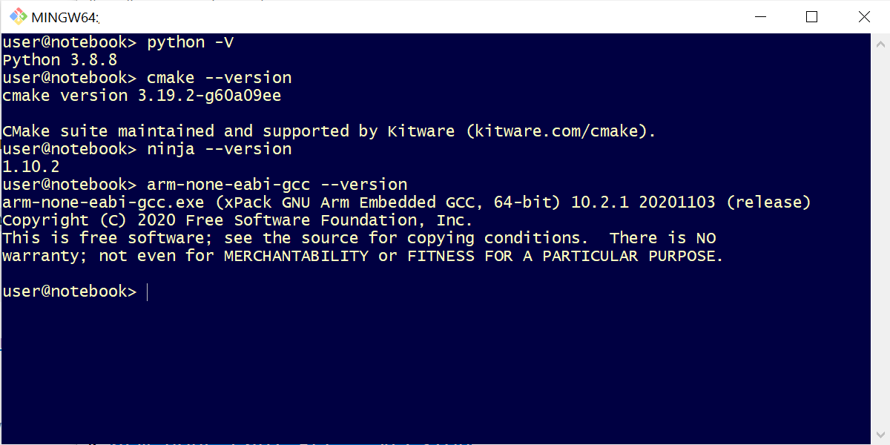
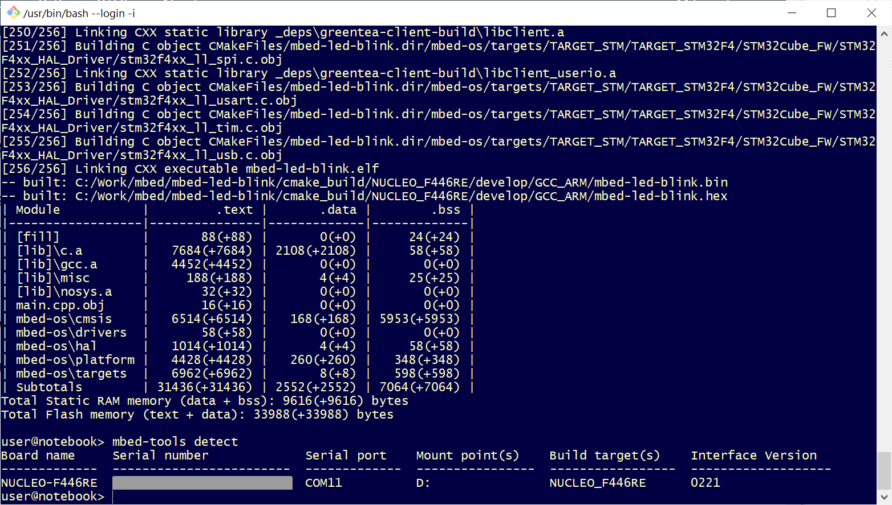

แนะนำการใช้งาน Arm Mbed CLI 2#
เนื้อหาในส่วนนี้อธิบายขั้นตอนการติดตั้งและใช้งานซอฟต์แวร์ Mbed CLI 2 Tools ซึ่งเป็น Python package (และไม่ใช่ Mbed CLI v1 ดังนั้นรูปแบบของคำสั่งที่ใช้งานจึงต่างกัน) และจะทดลองใช้งานกับระบบปฎิบัติการ Linux เช่น Ubuntu / Debian / Raspbian OS หรือจะใช้ WSL2 / Ubuntu สำหรับ Windows ก็ได้เช่นกัน
รายละเอียดเกี่ยวกับขั้นตอนการติดตั้ง Mbed CLI 2 สามารถดูได้จาก "Mbed CLI 2 Install or Upgrade" และ "Mbed CLI 2 Usage" สำหรับตัวอย่างการใช้คำสั่ง
▷ การติดตั้ง Mbed CLI 2 สำหรับ Linux#
ขั้นตอนแรกให้ผู้ใช้ติดตั้งโปรแกรมที่จำเป็นต้องใช้งานสำหรับ Mbed CLI 2 ตามลำดับต่อไปนี้
- Python 3 & Development Tools (
python3-dev) - ARM GNU Toolchain / GNU Arm Embedded Toolchain
- CMake (https://cmake.org/)
- Ninja Build System (https://ninja-build.org/)
คำสั่งสำหรับ Bash Shell ในการติดตั้งโปรแกรมสำหรับ Linux / Ubuntu มีดังนี้
$ sudo apt install python3-dev
$ sudo apt install ninja-build cmake tree
$ sudo apt install gcc-arm-none-eabi
จากนั้นให้ลองตรวจสอบเวอร์ชันของโปรแกรม เช่น Python 3 / CMake / Ninja-Build / GNU Arm Embedded Toolchain - Cross Compiler ดังนี้
$ python3 -V
$ cmake --version
$ ninja --version
$ arm-none-eabi-gcc --version
ขั้นตอนถัดไปเป็นการคำสั่งเพื่อติดตั้ง Mbed CLI 2 Tools และตรวจสอบเวอร์ชันที่ได้ติดตั้งใช้งาน
$ sudo python3 -m pip install -U intelhex prettytable future
$ sudo python3 -m pip install -U mbed-tools
$ mbed-tools --version
ลองมาดูเวอร์ชันของโปรแกรมที่ได้ติดตั้งเพื่อทดลองใช้งาน คือ
- python 3.8.10
- cmake version 3.19.8
- ninja version 1.10.2
- arm-none-eabi-gcc 10.2.1 20201103
- mbed-tools version 7.44.0
รูปภาพ: ตัวอย่างการทำคำสั่งใน Bash Shell ของ Ubuntu เพื่อตรวจสอบเวอร์ชันของโปรแกรม
รูปภาพ: ตัวอย่างการทำคำสั่งเพื่อติดตั้ง Mbed-CLI 2 Tools
▷ การติดตั้ง Mbed CLI 2 สำหรับ Windows#
สำหรับผู้ใช้ Windows ถ้าไม่ใช้ Linux ด้วยวิธี WSL2 หรือ Virtual Machine (VM) อีกทางเลือกหนึ่งคือ การดาวน์โหลดและติดตั้งใช้งานซอฟต์แวร์ต่อไปนี้ และนำมาใช้งานร่วมกับ Git Bash / MINGW64
อย่าลืมตั้งค่า System Environment Variables
เพื่อระบุ PATH สำหรับโปรแกรมเหล่านี้ เพื่อให้สามารถเรียกใช้งานแบบ Command Line ได้
รูปภาพ: รายการไฟล์สำหรับดาวน์โหลดเพื่อใช้งาน arm-none-eabi-gcc-xpack

รูปภาพ: ตัวอย่างการทำคำสั่งใน Git Bash Shell เพื่อตรวจสอบเวอร์ชันของโปรแกรม
▷ การสร้างโปรเจกต์ใหม่โดยใช้ Mbed CLI 2#
ถัดไปเป็นตัวอย่างการทำคำสั่งเพื่อสร้างโปรเจกต์ใหม่ โดยตั้งชื่อว่า mbed-os-demo
และสาธิตการเขียนโค้ดเพื่อทำให้วงจร LED บนบอร์ดไมโครคอนโทรลเลอร์ เช่น STM32 NUCLEO กระพริบได้
$ mbed-tools new "mbed-os-demo"
คำสั่งนี้จะสร้างไดเรกทอรีใหม่ตามชื่อโปรเจกต์ และจะดาวน์โหลดไฟล์ Mbed repository มาจาก Github ดังนั้นคอมพิวเตอร์ของผู้ใช้จะต้องเชื่อมต่ออินเทอร์เน็ต
เมื่อได้ดาวน์โหลดไฟล์และสร้างโปรเจกต์ใหม่ในไดเรกทอรี mbed-os-demo ได้แล้ว ให้ลองทำคำสั่ง tree
เพื่อดูโครงสร้างและรายการไฟล์ (แสดงรายการเฉพาะสองระดับแรก) ภายในไดเรกทอรีดังกล่าว
$ cd mbed-os-demo
$ tree -L 2
รูปภาพ: ตัวอย่างการทำคำสั่งเพื่อสร้างโปรเจกต์ใหม่ mbed-os-demo
ตัวอย่างข้อความเอาต์พุตจากการทำคำสั่ง tree -L 2 มีดังนี้
.
├── CMakeLists.txt
├── main.cpp
├── mbed-os
│ ├── CMakeLists.txt
│ ├── CONTRIBUTING.md
│ ├── DOXYGEN_FRONTPAGE.md
│ ├── Jenkinsfile
│ ├── LICENSE-apache-2.0.txt
│ ├── LICENSE.md
│ ├── README.md
│ ├── TESTS
│ ├── UNITTESTS
│ ├── cmsis
│ ├── connectivity
│ ├── docker_images
│ ├── docs
│ ├── doxyfile_options
│ ├── doxygen_options.json
│ ├── drivers
│ ├── events
│ ├── extern
│ ├── features
│ ├── hal
│ ├── logo.png
│ ├── mbed.h
│ ├── platform
│ ├── requirements.txt
│ ├── rtos
│ ├── storage
│ ├── targets
│ └── tools
├── mbed-os.lib
└── mbed_app.json
17 directories, 16 files
จากรายการไฟล์ จะเห็นได้ว่า มีไฟล์ main.cpp ได้ถูกสร้างมาให้แล้วโดยอัตโนมัติ และให้เปิดไฟล์เขียนโค้ดตามตัวอย่าง
โดยจะเลือกใช้บอร์ด STM32 Nucleo เป็นบอร์ดเป้าหมาย เช่น
- NUCLEO-F446RE
- NUCLEO-L476RG
- NUCLEO-L432KC
ข้อดีของบอร์ด STM32 Nucleo คือ การรองรับการอัปโหลดไฟล์แบบ Drag & Drop Device Programming เมื่อเชื่อมต่อบอร์ดกับคอมพิวเตอร์ของผู้ใช้จะมองเห็นเป็น USB Flash Drive
#include "mbed.h"
#include "platform/mbed_version.h"
// Note: The LED1 pin on the NUCLEO-L476RG board is PA_5.
DigitalOut led( LED1 ); // use on-board LED (LED1)
// see: https://os.mbed.com/docs/mbed-os/latest/apis/digitalout.html
int main() {
printf( "Hello, Mbed OS!\n" );
printf( "Mbed version: %d.%d.%d\n",
MBED_MAJOR_VERSION,
MBED_MINOR_VERSION,
MBED_PATCH_VERSION );
while (1) {
led = !led; // toggle the LED output
printf( "LED: %d\n", (int)led.read() ); // read LED state
ThisThread::sleep_for( 500ms ); // sleep for 500 msec
}
return 0;
}
ถัดไปให้ตรวจสอบเวอร์ชันของ CMake ที่ใช้งานจริง กับเวอร์ชันต่ำสุดที่มีการระบุไว้ในไฟล์
./CMakeLists.txt และ ./mbed-os/CMakeLists.txt ภายในไดเรกทอรีของโปรเจกต์
ตัวอย่างเช่น มีการระบุเวอร์ชันขั้นต่ำสุดเป็ 3.19.0
cmake_minimum_required(VERSION 3.19.0)
ให้กำหนดค่า Baud Rate สำหรับการรับส่งข้อมูลทาง Serial
ให้ตรงกับ 115200 (จากเดิมที่มีค่า Default เป็น 9600) ในไฟล์ ./mbed_app.json ดังนี้
{
"target_overrides": {
"*": {
"platform.stdio-baud-rate": 115200,
"platform.stdio-convert-newlines": true,
"target.printf_lib": "std"
}
}
}
จากนั้นทำขั้นตอน Build Project และจะต้องกำหนดบอร์ดหรือแพลตฟอร์มเป้าหมาย (TARGET)
ถ้าเลือกใช้บอร์ด NUCLEO-L476RG | NUCLEO_F446RE | NUCLEO_L432KC
ก็ทำคำสั่งตามรูปแบบต่อไปนี้
$ mbed-tools compile -m NUCLEO_L476RG -t GCC_ARM
$ mbed-tools compile -m NUCLEO_F446RE -t GCC_ARM
$ mbed-tools compile -m NUCLEO_L432KC -t GCC_ARM
ไดเรกทอรีที่เป็นเอาต์พุต ซึ่งมีไฟล์ .bin และ .hex สำหรับบอร์ดเป้าหมายคือ
./cmake_build/<TARGET>/develop/GCC_ARM/
แต่ถ้าต้องการคอมไพล์โปรเจกต์ใหม่ทั้งหมด (force rebuild) ให้เพิ่ม --clean ต่อท้ายคำสั่ง
เมื่อได้ไฟล์ .bin แล้ว ก็สามารถนำไปใช้กับบอร์ด STM32 NUCLEO ได้ง่าย โดยสำเนาไฟล์ .bin
หรือคลิก Drag & Drop ไปยังไดรฟ์ของบอร์ดดังกล่าวเมื่อเสียบสาย USB เชื่อมต่อกับคอมพิวเตอร์
ในกรณีที่ใช้บอร์ด NUCLEO_F446RE จะมองเห็น USB Flash Drive ตรงกับชื่อ NODE_F446RE
รูปภาพ: ตัวอย่างการทำคำสั่งคอมไพล์โค้ดในโปรเจกต์ mbed-os-demo
ถ้าลองทำคำสั่ง mbed-tools detect (ใน Git Bash for Windows)
จะพบว่า มีรายการบอร์ด เช่น NUCLEO-F446RE และหมายเลขพอร์ตที่เชื่อมต่ออยู่
ถ้าทดสอบการทำงานของโปรแกรมที่ได้ แล้วรับข้อความจากบอร์ด NUCLEO (ผ่านทางวงจร ST-LINK/V2 ที่อยู่บนบอร์ด) เช่น ใช้โปรแกรม Arduino IDE - Serial Monitor เปิดรับข้อความจาก Serial COM port (baudrate: 115200) ก็จะมองเห็นข้อความตามตัวอย่างนี้
รูปภาพ: ตัวอย่างข้อความเอาต์พุตจากบอร์ดไมโครคอนโทรลเลอร์
รูปภาพ: บอร์ด NUCLEO-F446RE สำหรับการทดลองเขียนโปรแกรม
▷ การดาวน์โหลด mbed-os แยกจากโปรเจกต์#
คำแนะนำสำหรับการสร้างโปรเจกต์ใหม่
- ให้ดาวน์โหลดไลบรารี
mbed-osจาก Github (โดยทั่วไปก็เลือกเป็น master branch) มาเก็บไว้ก่อน เป็น local copy ซึ่งจะเก็บไว้ในไดเรกทอรีที่มีชื่อเหมือนกัน - สร้างโปรเจกต์ใหม่ในอีกไดเรกทอรี และภายใต้ไดเรกทอรีของโปรเจกต์นั้น
ให้ทำคำสั่งเพื่อสร้าง soft-link ไปยัง
mbed-os(local copy) จะได้ไม่ต้องดาวน์โหลดจาก URL ที่มีการระบุไว้ในไฟล์mbed-os.lib(https://github.com/ARMmbed/mbed-os#master) - ลองทำคำสั่งเพื่อคอมไพล์โค้ดของโปรเจกต์ ระบุชื่อ Toolchain เช่น
-t GCC_ARMและบอร์ดเป้าหมายที่ต้องการใช้งาน เช่น-m NUCLEO_F446REสำหรับบอร์ด STM32 NUCLEO-F446RE เป็นตัวอย่าง
# clone the Github repository into 'mbed-os' (only once)
$ git clone https://github.com/ARMmbed/mbed-os
# create a new project without downloading the 'mbed-os' repository
$ mbed-tools new -c "mbed-led-blink"
# change to the project directory
$ cd "mbed-led-blink"
# create a softlink the local mbed-os repository
$ ln -s ../mbed-os mbed-os
# compile the project using the specified target board
# and toolchain (e.g. NUCLEO-F446RE board and GCC_ARM)
$ mbed-tools compile -m NUCLEO_F446RE -t GCC_ARM
# upload firmware the target board attached to the host computer
$ mbed-tools compile -m NUCLEO_L432KC -t GCC_ARM --flash
รูปภาพ: ตัวอย่างการทำคำสั่ง mbed-tools ใน Git Bash Shell for Windows

รูปภาพ: ตัวอย่างการทำคำสั่ง mbed-tools ใน Git Bash Shell for Windows
▷ การดาวน์โหลดและคอมไพล์โปรเจกต์ตัวอย่างจาก Github#
หากต้องการทดลองคอมไพล์โค้ดโปรเจกต์ตัวอย่างที่มีการใช้ไว้ใน Github
เช่น mbed-os-example-blinky ก็ทำคำสั่งตามตัวอย่างดังนี้
$ git clone https://github.com/ARMmbed/mbed-os-example-blinky
$ cd ./mbed-os-example-blinky
# download the mbed-os library from github
$ mbed-tools deploy
ข้อสังเกต: คำสั่ง mbed-tools deploy เป็นการดาวน์โหลดไลบรารีต่าง ๆ
และมีการระบุไว้ในไฟล์ .lib ภายในไดเรกทอรีของโปรเจกต์
หรือจะทำคำสั่งแบบนี้ ก็ได้เช่นกัน
$ mbed-tools import https://github.com/ARMmbed/mbed-os-example-blinky
$ cd ./mbed-os-example-blinky
# compile the project using the specified target board
# and toolchain (e.g. NUCLEO-F446RE board and GCC_ARM)
$ mbed-tools compile -m NUCLEO_F446RE -t GCC_ARM
▷ กล่าวสรุป#
เราได้เห็นขั้นตอนการติดตั้งและใช้งาน Mbed CLI 2 และโปรแกรมต่าง ๆ ที่เกี่ยวข้อง เพื่อการทำคำสั่งแบบ Command Line เช่น การสร้างโปรเจกต์ใหม่ การคอมไพล์โค้ดในโปรเจกต์ เป็นต้น
This work is licensed under a Creative Commons Attribution-ShareAlike 4.0 International License.
Created: 2021-11-23 | Last Updated: 2021-11-29